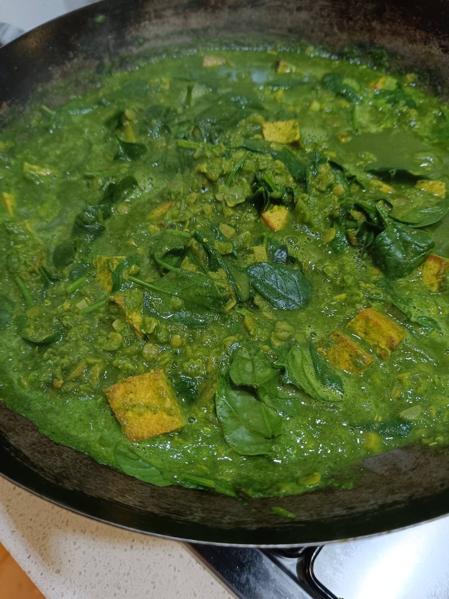

Green Dhal with Spinach and Tofu
Table of Content
Green Dhal with Spinach and Tofu

Ingredients
| 175g | Rice (for 2 servings; optionally prepare for 4 and refridgerate) |
| 1 | Onion |
| 1 clove | Garlic |
| 30g | Ginger root |
| 200g | Spinach |
| 2 tbsp | Lemon juice + zest |
| 200g | Yellow lentils |
| 300g | Firm tofu |
| for 800ml | Vegetable boullion powder |
| 200ml | Soy cream |
| 3 tbsp | Coconut oil |
| Spices | Turmeric powder, ground cumin, ground coriander, salt, chili, pepper |
Why this Dish
This dhal is a powerhouse of plant-based protein. By blending half the spinach with soy cream, you get a vibrant green, silky texture without heavy dairy.
Instructions

- Soak the lentils in a bowl with 0.5l of hot water (15 min).
- Cook the rice according to the package instructions.
- Prepare the vegetable stock (or use home-made stock from your meal prep plan).
- Cut the tofu into approx. 1cm cubes.
- Add salt, chili, and coconut oil to a wok or pot and heat over medium heat until the oil is liquid; add tofu and mix well.
- Fry the tofu until golden brown.
- While the tofu is frying, finely chop the onion, garlic, and ginger.
- Once the tofu is ready, place it on a plate and set aside.
- In the same pot/wok, add the onion, garlic, and ginger and sauté for 1 minute over medium heat. Add turmeric, cumin, and coriander and cook for another 2 minutes.
- Add the tofu cubes and stir.
- Drain the lentils in a sieve, rinse thoroughly, and add them to the pot and stir.
- Pour in the boullion and bring to a boil.
- Cover and simmer over medium heat for about 15 minutes until tender, adding more boullion if needed.
- Meanwhile, chop the spinach with scissors if necessary.
- Puree half of the spinach with the soy cream using a (hand) blender.
- Stir the puree into the dhal and bring back to boil.
- Season to taste with lemon juice, salt, and pepper, then turn off the heat.
- Stir in the remaining spinach.
- Serve with rice in deep plates or bowls.